Debugging¶
Our goal is to have as much data publicly available to see as possible. If something is not working, you should know what isn’t and why.
We display all the information within the Debug Textures tab, which is split up into different pages.
Compositing¶
Here is an overview of many of the systems use, helpful for depth tests and general debugging.
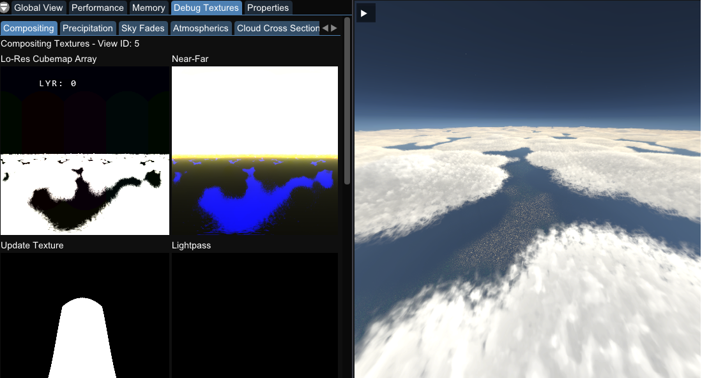
Celestial Display¶
Shows the current position and path of the Sun and Moon, along with information about their position.
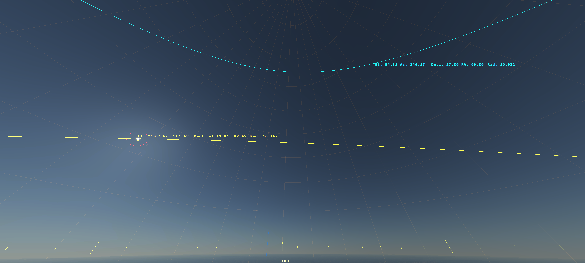
There is additional data displayed for both solar and lunar eclipses.
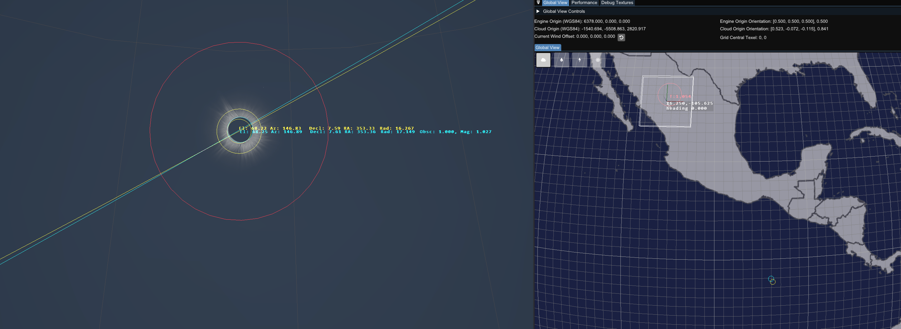
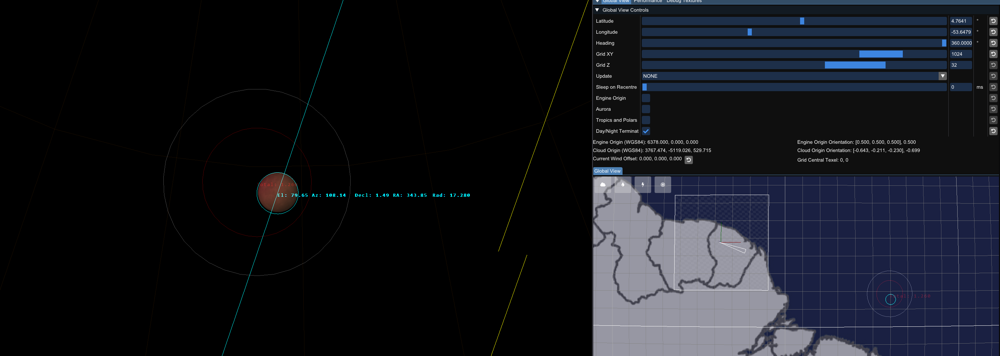
Profiling¶
Use profiling to aid performance measuring. This is a good way to determine what aspects of trueSKY are the most performance heavy. This has been moved into its own performance tab and is not located in the debug textures window.
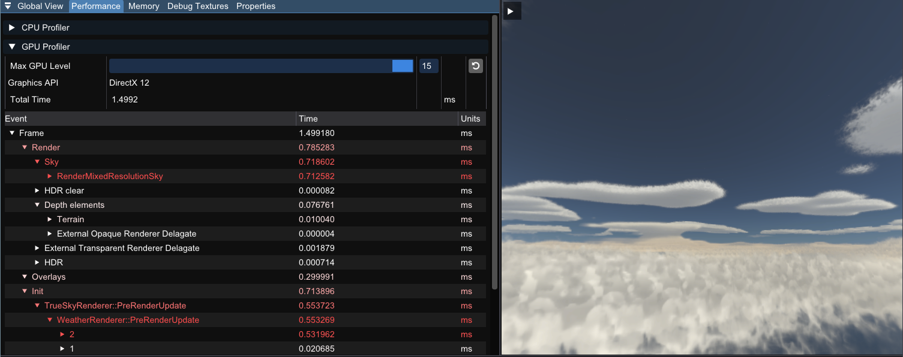
Atmospherics¶
Detailed numbers on lighting values as well as colours. Issues with lighting can be looked at here.
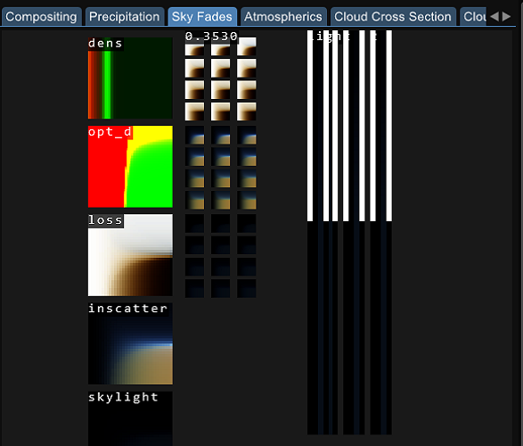
Cloud Cross Section¶
An overview of the cloud textures while they are generated. You can also see the Signed Distance Field that 4.4 takes advantage of to improve performance.
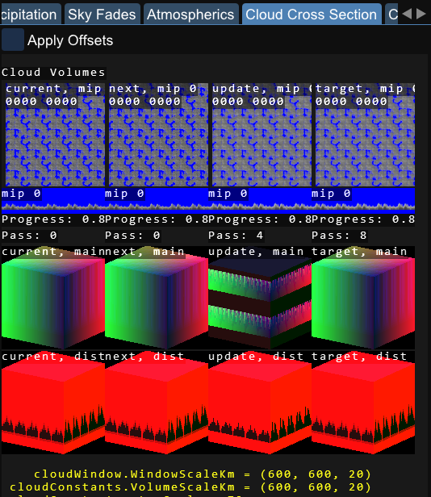
Precipitation¶
Here is an overlay of the rain map texture. If the precipitation volume is blank, then there will be no precipitation in your scene. Precipitation will only fall under a specified thickness of clouds, and precipitation regions will be specific to their point on the globe.
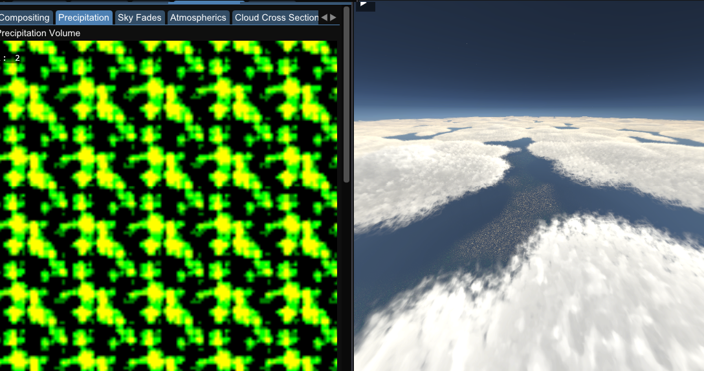
Here is an example of full cloud coverage with an area of regional precipitation.
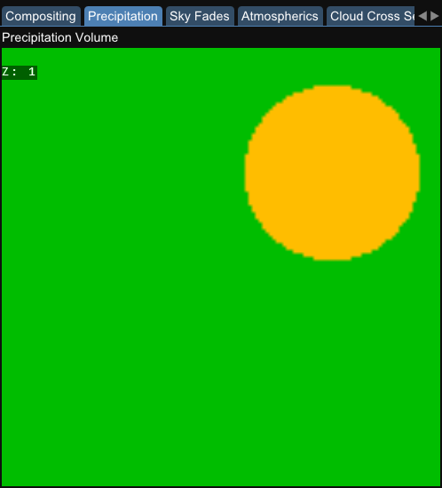
Auxillary Textures¶
3D clouds textures including the shadow map texture. Helpful to see how much your Worley setting are affecting the clouds, as well as how large the Shadow Map is.
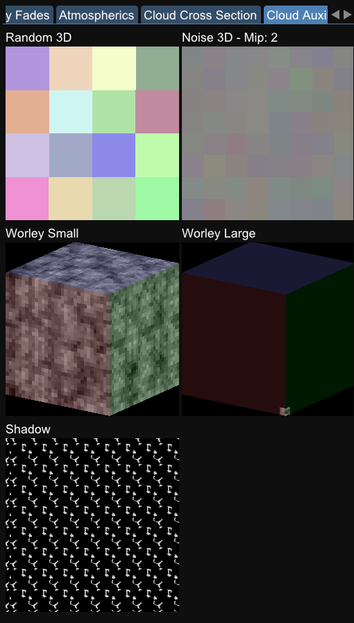
Queries¶
Within our debug textures tab, we also have information about our queries.
Queries such as a point query can be used to determine the parameters at a specified point, for example you could determine the density of clouds at a certain point, and this could be used to limit visibility in your engine. Or you could query the rainfall over a certain area, and adjust how wet your objects appear in a scene.
We have point queries for specified points and line queries, which recieve the data from between two specified points. These all update in real time and can be very beneficial if used correctly. We have functions to specify your own queries within our SDK and in our plugins.
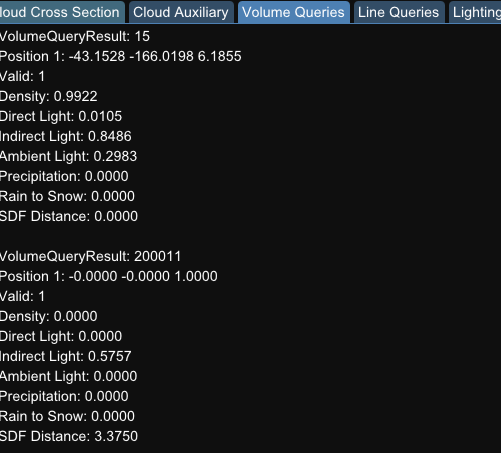